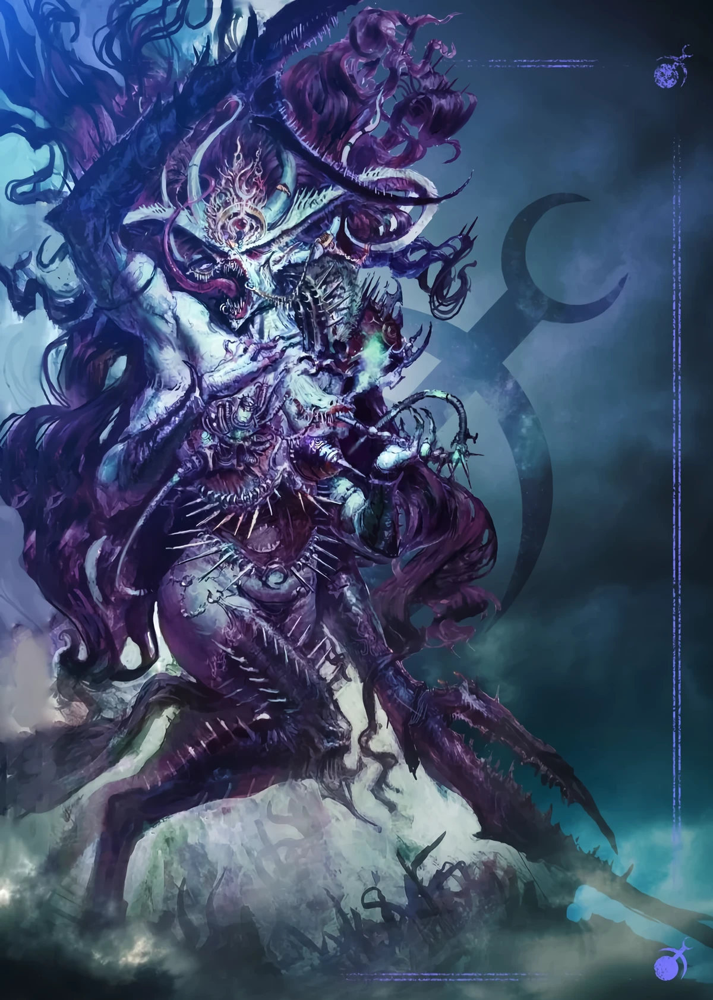

Slaanesh
Slaanesh
Titles
Dark Prince,
Prince of Pleasure,
Lord of Excess,
Perfect Prince,
Prince of Chaos,
Master of Excess in All Things,
Sai'lanthresh ("She Who Thirsts")
Sacred Number
6
Slaanesh is the Chaos God of pleasure, pain, hedonism, excess, perfection and decadence. Lust, pride and self-indulgence are the hallmarks of all who follow it.
Slaanesh is the youngest of the four major Chaos Gods, having come to full self-awareness within the Immaterium only during the 30th Millennium. The name Slaanesh is a corruption of the Aeldari term Slaaneth (Slaa meaning "ecstasy" or "pleasure" and Neth meaning "lord" or "prince" in the Aeldari Lexicon; hence, the "Prince of Pleasure"), though ironically, the Aeldari refer to this foul entity only as Sai'lanthresh, "She Who Thirsts."
Slaanesh is the Prince of Pleasure, the Dark God dedicated to the pursuit of earthly gratification and the overthrow of all decent behaviour, as well as hedonism and pleasure for its own sake. It is the god of obsession, the Master of Excess in All Things, from gluttony to lust to megalomania. Its sacred number is six and the colours associated with Slaanesh are riotous purples, pinks and black. The Daemonic armies of Slaanesh are known as the Legions of Excess.
Wherever mortals are ruled by their own unquenchable desires, the Dark Prince of Chaos is there in the shadows, whispering, tempting, and feasting on a banquet of souls. But this is true in all things, not just carnal pleasures. Those who desire to indulge in the finest culinary delights, the most beautiful artworks, even the most sensual clothing, could all be amongst Slaanesh's disciples. Just as importantly, Slaanesh is also the god of perfection. The singer striving for the most beautiful song or the warrior who seeks the perfect fighting techniques, both could be devotees of Slaanesh.
Slaanesh was given life by the immorality and hubris of the ancient Aeldari Empire. As their empire reached its zenith, the Aeldari became lost in their own decadence, for they experience sensation and emotion to a far greater degree than any other intelligent species of the galaxy. The capabilities of their highly advanced technology meant that the Aeldari did not need to labour or wage war. Instead, they were able to dedicate their lives to whatever idle pursuits took their fancy. Over several generations, this indolence and hedonism came to rule and pervert their souls.
In the Immaterium, the collective psychic reflections of their indolence and amoral hedonism caused a new major Chaos power to stir, beginning in the 25th Millennium of the Terran calendar. Created by one species' pure dedication to indulgence and excess, the first psychic motes of what would become Slaanesh began to coalesce. The dormant Slaanesh fed upon the unchecked collective psyche of the Aeldari, drawing on their lusts and ambitions, their artistry and pursuit of excellence in all things. In turn, as Slaanesh grew, its nascent dreams trickled into the minds of the Aeldari and fuelled their desires, pushing them ever onwards towards their eventual doom.
Eventually, the Aeldari civilisation devolved into little more than pleasure cults dedicated to every act of physical, mental and spiritual fulfillment. Blood stained the statuary of their plazas as crowds of drug-addled maniacs sated their violent desires in the streets of the Aeldari homeworlds. On one particularly depraved night, the debauchery reached a terrible crescendo that tore out the heart of the Aeldari Empire and left it ravaged beyond recovery.
The Fall of the Aeldari in the early 30th Millennium was signalled by the birth-scream of Slaanesh, a tsunami of emotion and psychic power that heralded the Prince of Pleasure's arrival in the Realm of Chaos even as it shaped a new dominion within that dimension to serve as its home, the Dark Prince's Realm. The psychic implosion caused by Slaanesh's birth swallowed hundreds of worlds at the heart of the Aeldari Empire in what is now the Imperium of Man's Segmentum Obscurus.
The blast killed billions of Aeldari in a single instant and devoured a great section of the galaxy in the process. Such was its ferocity that it overwhelmed the barrier between the material and the immaterial, forming the massive, permanent Warp rift later named by Humanity as the "Eye of Terror." Rampant and hungry, Slaanesh devoured the minds and souls of the Aeldari, absorbing them into its essence. Across the galaxy, that ancient species was almost wiped out.
After its birth, Slaanesh slew most of the Aeldari and their gods in the Immaterium, except for the Aeldari god of war Kaela Mensha Khaine. Khaine's psychic energy was instead dispersed into many separate pieces scattered across the various Infinity Circuits of the Aeldari craftworlds. The Laughing God Cegorach also survived Slaanesh's birth by fleeing into the Labyrinth Dimension of the Webway. While Isha, the goddess of fertility and the harvest, was defeated alongside her divine brethren, she was not destroyed outright and absorbed by Slaanesh like the rest of the Aeldari pantheon. Slaanesh vanquished her as it had all of the other Aeldari gods within the Warp, but only took her prisoner rather than absorbing her energies outright.
What fell purpose Slaanesh had in keeping Isha alive, none amongst the Aeldari now know, but the Prince of Pleasure was ultimately denied its spoils: for some reason Nurgle, the Plague Lord, waged war against Slaanesh to "rescue" the Aeldari goddess. Why Grandfather Nurgle intervened is unclear, although some Aeldari savants believe that one of the older major Chaos Gods wanted to give the youngest amongst them a good lesson about its proper place in the order of things. What is known is that Nurgle's Daemonic legions proved victorious and the Plague God took the Aeldari goddess back to its domain in the Realm of Chaos.
Only a relative few Aeldari survived Slaanesh's birth-feast. Other Aeldari survivors included the Harlequin, and those Craftworld Aeldari or "Asuryani" who were very far away from the Aeldari homeworlds when the Warp rift formed. Most of the survivors that remain have become sworn enemies of the Dark Prince, and yet a few of them -- the Drukhari -- have formed isolated cabals that still behave as their ancestors did, perversely following the downward spiral of excess and hedonism.
That is how events are viewed from the chronology of the material universe. In the Warp, however, things are different, for the Immaterium is not bound by linear four-dimensional time, and events do not occur in a strict sequence of cause and effect. As its rival gods reckon it, Slaanesh has always existed in the Warp, and yet has never existed at all.
Some say that it is impossible for mortals to look upon the divine face of Slaanesh without losing their soul to it, for all who see its face become willing slaves to the whims of the Dark Prince, embracing its ways with wild abandon. The mere knowledge of Slaanesh's existence can cause a world to topple into corruption and hidden depravity.
Not even the agents of the Inquisition know for sure how far Slaanesh's influence spreads, for wherever the lust for the pleasures of power and temporal gain exists, the talons of Slaanesh dig deep. Despite their best efforts, it is almost certain that the Imperium is rotten to the core, just as the Aeldari Empire was before it. How long before it succumbs to a similar fate?